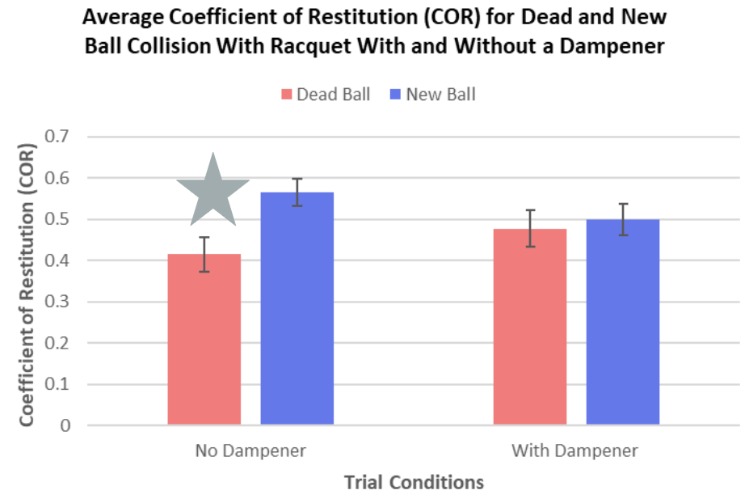

For tennis players, the wrist and forearm are under heavy stress.
Recently, professional tennis players have been advocating for a more consistent tennis ball.
Between different tennis ball brands, there are subtle changes in material, mass, and air pressure, all of which can cause injury.
Rationale
Little prior research has been conducted on the impact of tennis ball pressure and injury.
Studies on the vibration dampener have been conflicting, so more data needs to be collected on the device's effectiveness.
This study aims to examine the change in air pressure of the tennis ball and the effectiveness of injury prevention devices through the coefficient of restitution (COR).

Results
The results indicated a significant difference of the COR between the new and dead balls.
The new balls had a higher COR, indicating greater variability in ball pressure and increase in injury liklihood.
Unexpected results were obtained for one of the conditions with the vibration dampener, so more data is necessary for an accurate conclusion.